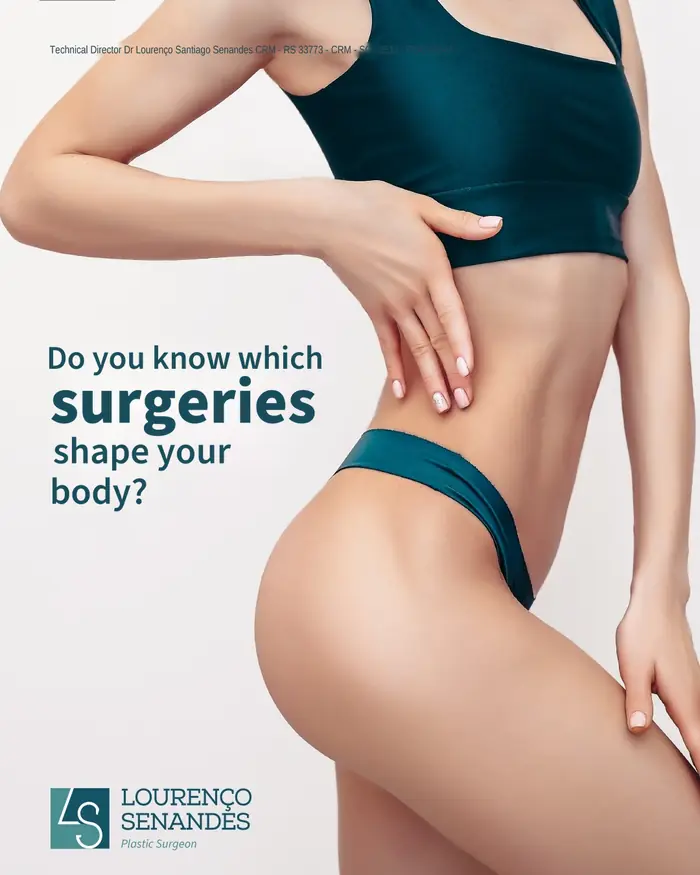
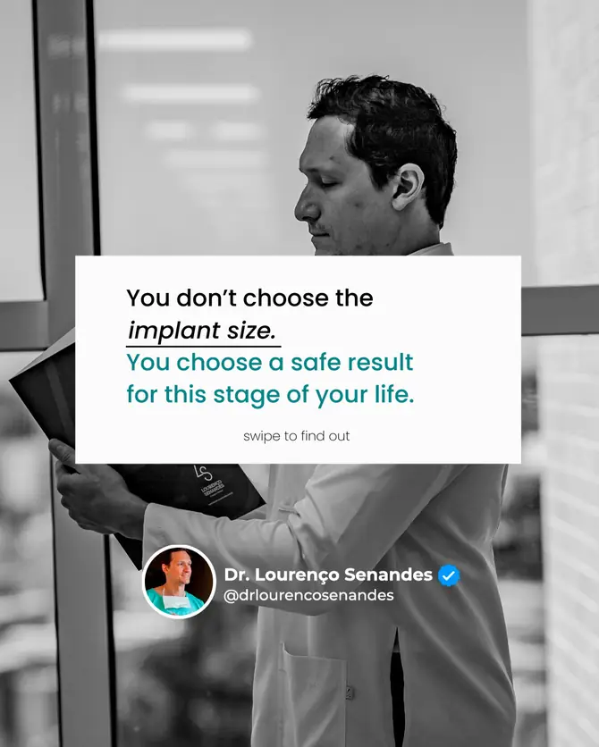

Social Media
Repositioning
ART DIRECTION · DIGITAL COMMUNICATION · CONTENT DESIGN
A clearer,
more human
presence.
Repositioning a plastic surgeon’s social media communication through editorial design, consistent visual language, and authentic photography.
The work explores a more approachable way to communicate technical subjects while retaining the clarity and credibility expected of medical information. Portraits, typographic contrast, and structured layouts become part of one recognizable system.
More than
a new look.
Medical expertise needs to be communicated with precision. Social content also needs to feel accessible and easy to navigate.
The visual challenge was to balance institutional trust with a more personal presentation, creating clear hierarchy for educational subjects and giving each post a consistent brand character.
Before.
And after.
Comparing an earlier communication piece with the subsequent design direction helps illustrate the repositioning: a shift toward clearer typography, deliberate composition and visual storytelling that gives photography a stronger role.


A visual voice built on trust, clarity and a more human connection.
One identity.
Many conversations.
A selection of social media pieces using real project artwork, from educational carousels and procedure-related questions to seasonal communication and portrait-led posts.
Consistency
without
repetition.
The visual system creates room for different types of content without sacrificing recognition.
Some pieces lead with an editorial title, others with photography or an interface-inspired graphic. Color, spacing, type and information hierarchy connect these formats to the same communication direction.
Designed to
communicate better.
A cohesive social media direction that brings professional photography, educational communication and expressive design into one identity. This case presents the creative output rather than claiming performance results that have not been supplied.